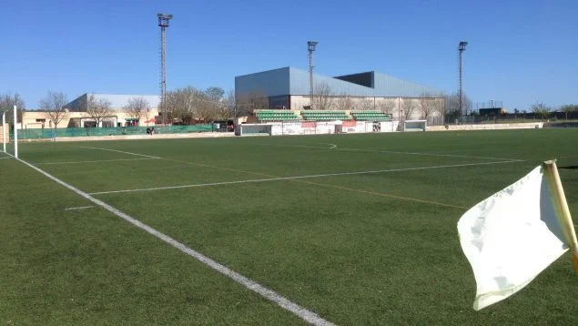

División en Europa tras la victoria de Trump: del temor de Zelenski al optimismo de Putin
La victoria de Donald Trump en las elecciones de Estados Unidos ha dividido Europa. El presidente ucraniano es uno de los que más teme por el futuro de su pueblo. Este jueves sus palabras han desprendido incertidumbre sobre lo que puede pasar tras la vuelta de Trump. Desde el Kremlin, en cambio, llegan palabras optimistas ante el cambio en la Casa Blanca.
Para el líder húngaro, Victor Orban, muy cercano al Kremlin, Donald Trump es un ejemplo. Para otros como el presidente francés, Emmanuel Macron, la elección de Trump marca -o debería marcar- un antes y un después: "es el momento para que Europa comience a protegerse por sí sola".
Pero uno de los dirigentes que más teme la vuelta de Trump es el presidente de Ucrania. Nada más conocer que Trump volvía a la Casa Blanca, Volodimir Zelenski le felicitó por su "impresionante" victoria electoral. "Confiamos en que Ucrania seguirá recibiendo un fuerte apoyo bipartidista por parte de Estados Unidos", aseguró.
Los aguacates
La importancia de los aguacates en nuestra dieta
Contiene alrededor de 15 nutrientes que van desde calorías, carbohidratos, proteínas,
fibra alimenticia, Vitaminas A, C y E, Folatos, Potasio, Magnesio, Hierro, Calcio y Sodio,
así como grasa monoinsaturada. Entre sus beneficios encuentras: Reduce los niveles de
colesterol malo en sangre y aumenta el colesterol bueno.

Aguacate
Detenido un entrenador de fútbol tras patear y fracturar la nariz del técnico rival en un partido de cadetes
La Guardia Civil detuvo el pasado 26 de octubre al entrenador de un equipo de fútbol por un presunto delito de lesiones al haber agredido al entrenador del equipo rival.
Los hechos ocurrieron mientras se disputaba un partido de futbol entre dos equipos de categoría cadete -es decir, chicos de entre 14 y 15 años- en el campo de fútbol de Llucmajor. Concretamente, se trata de un Espanya – Arenal B de Cadete Primera Regional Mallorca, Grupo E. Se requirió la presencia de la Guardia Civil por una supuesta pelea multitudinaria.
Al parecer, cuando terminó el partido, los jugadores de uno de los equipos se acercaron increpando a la grada del equipo rival. Ante tal hecho, el entrenador del equipo rival intentó alejarlos, llevándolos a su campo para que no alterara a los aficionados. Fue entonces cuando uno de los jugadores empujó a este que cayó bruscamente al suelo y estando en el suelo el entrenador del equipo contrario le propinó una fuerte patada en la cara, provocándole un gran hematoma y fracturándole la nariz.

Campo de fútbol